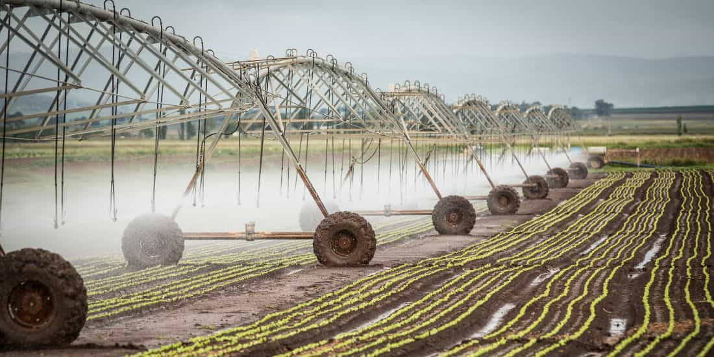
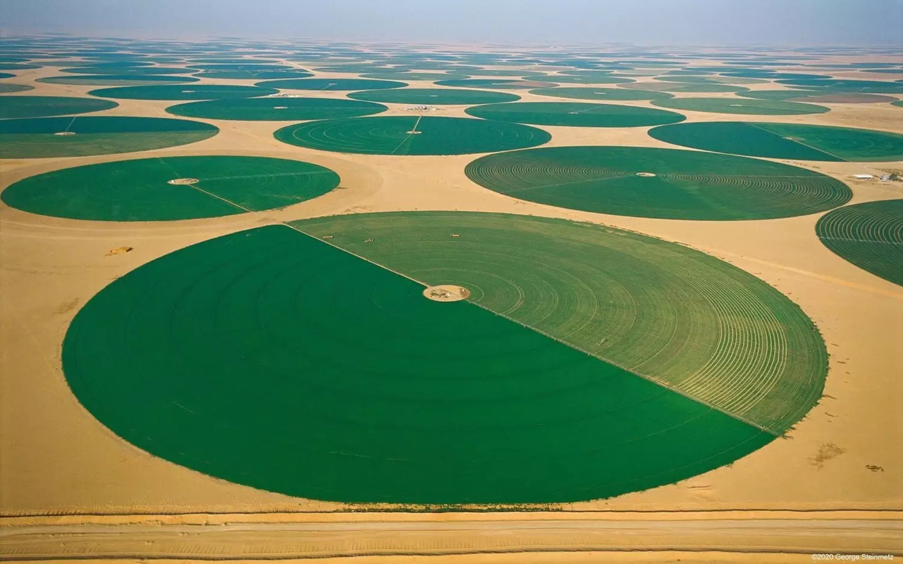

Um pivô de irrigação é um sistema automatizado usado na agricultura para aplicar água e fertilizantes de maneira uniforme em grandes extensões de lavouras.
O modelo mais comum é o pivô central, que consiste em uma estrutura metálica suspensa sobre rodas, girando em círculo ao redor de um ponto fixo central.
Como Funciona
O sistema é composto por uma tubulação principal suspensa por torres metálicas equipadas com motores. À medida que o equipamento se move pelo campo, ele aciona
pequenos aspersores ou sprays que distribuem água constantemente.
Captação: A água é bombeada de um rio, açude ou poço profundo até o centro do pivô.
Movimento: As torres se movimentam em velocidades diferentes; a torre da ponta é a mais rápida, enquanto as internas se ajustam para manter a estrutura
alinhada em curva.
Controle: Todo o manejo é feito via painel de controle ou sistemas de telemetria, permitindo alterar a quantidade de água aplicada dependendo da necessidade de cada cultura.
Para esta aula vamos montar uma maquete exemplificando uma irrigação de pivo usando componentes da Robotica
Arduino Uno R3
Motor DC 5v com rodas
Ponte H
Sensor Utrassônic


para a inversão de polaridade e consequentemente de sentido de rotação do motor precisaremos de uma Ponte H
Também será preciso estalar a biblioteca RP-drive L298
Agora basta a programação do pivô